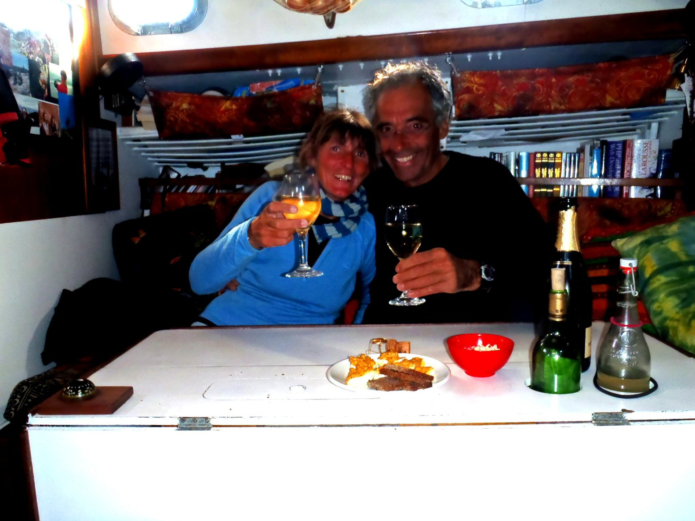

Saturday, April 23rd, 2011
Sunday, April 24th, 2011
Some albatross are circling the boat. Two species, one that is all black, and another one - like the ones we've seen in the west part of O'Ahu - white.
Monday, April 25th, 2011
 Calm day today, but still progressing.
Calm day today, but still progressing.
Tuesday, April 26th, 2011

Wednesday, April 27th, 2011
No wind at 1 pm... And we don't want to use the engine too much, we'll deal with the calm.
Some wind seems to come back around 4 pm, it seems we've crossed this trough between the two high pressures (see fax).
The night is beautiful this evening.
Thursday, April 28th, 2011
Wind remains light during the rest of the day, but at least, there is wind.
Friday, April 29th, 2011
 Still the same kind of weather. There is a light current, taking us North.
Still the same kind of weather. There is a light current, taking us North.
Saturday, April 30th, 2011

Sunday, May 1st, 2011
 We are in some kind of convergence zone - that rings a bell - between two high pressures.
We are in some kind of convergence zone - that rings a bell - between two high pressures.
Clouds, changing light winds, some kinds of squalls, that looks indeed a lot like the ITCZ, with the air temperature a bit lower though.
There is a lot of debris in the water, mostly fishing gears (lines, nets, floats, all kind of crap).
Albatross are still visiting us every day.
Monday, May 2nd, 2011
Tuesday, May 3rd, 2011
Set the mizzen around noon.
Wednesday, May 4th, 2011
It comes back around 10:30 am..., and the weather clears up. This is still light, but we're moving.
Thursday, May 5th, 2011
We're still expecting the wind to shift West.
The wind drops completely in the afternoon, no wind at all. Sails are flapping, we roll up the yankee to preserve it.
Friday, May 6th, 2011
Drizzle, like in Britanny.
Saturday, May 7th, 2011
Then the wind drops again, shifts, picks up, drops again... Loosed the reef at 4 pm. The wind is oscillating around the North.
Sunday, May 8th, 2011
Monday, May 9th, 2011
Tuesday, May 10th, 2011
Some wind comes, from the West, finally!
But that is still light. We carry yankee, staysail, main with one reef, to limit the flapping.
At 10 am, the boat speed is over two knots! Wow!
Albatross are still coming to see us, every day. They circle the boat a couple of times, and then go somewhere else...
At 6 pm, we put another reef in the main, just for the balance, we are doing 6 knots, unbelievable!
Wednesday, May 11th, 2011
And it is cold! The water is now at 13°C (55°F), the air temperature along those lines too, and with the wind, it feels like freezing.
But we've done 130 miles during the last 24 hours.
Thursday, May 12th, 2011
 Less wind, from the West-North-West.
Less wind, from the West-North-West.
There is an annoying swell from North West, painful.
The wind is shifting W¼NW, we gybe. This way, the swell is not that boring.
Gybed again at 6 pm, heading North-East.
Friday, May 13th, 2011
The sea is just a big mess.
Lines of squalls, and the weather is bloody cold! We're having about 5 Beaufort, from the West.
The wind is reaching about 30 knots in the squalls.
Saturday, May 14th, 2011
 We're dealing with a trough, not clearly anticipated by the GRIBs. Again, the faxes remain the point of truth.
We have squalls back to back, the wind between 0 and 30 knots, it's tiring.
We're dealing with a trough, not clearly anticipated by the GRIBs. Again, the faxes remain the point of truth.
We have squalls back to back, the wind between 0 and 30 knots, it's tiring.
In the evening, we're carrying only the yankee and the staysail, this way it is easier for the autopilot. We're still doing 5 knots.
Sunday, May 15th, 2011

At 5 am, the barometer begins to go up again, and the wind shifts North-North-West. That means we are sailing along the lower part of this trough.
We now carry yankee, staysail and two reefs in the main.
Monday, May 16th, 2011
There is a trough just in front of us, combined with the low pressure that is approaching, it's going to be interesting.
The wind is shifting South-South-East, meaning the low is in our south. We are heading North-East, trying to put some distance between the low and us. Rolled the yankee at 1:20 am.
Dropped the main at 3:20 am, the wind keeps increasing. Heavy rain.
At 6 am, the wind blows 8 Beaufort, we decide to drop the staysail (the brand new lovely one) to replace it with the storm staysail. That would be really too bad to explode it. Just after having droppped it, ready to set the storm one, we see that the boat behaves quite nicely bare poles; let us stay a bit like that!
Lying ahull at 6:20 am, wind blowing from East-South-East, a steady 8, with gusts at 9 Beaufort.
This is not too bad, it is noisy but not as uncomfortable we would have imagined. Just after dropping the staysail, we cooked some pancakes. After that, we went to our bunks, to take some rest.
The barometer begins to go back up again in the afternoon.
We put back en route at 2:45 pm, Staysail and two reefs in the main.
We did about 12 miles lying ahull, we were drifting at about 1 ½ knot.
As expected, the wind shifts North, and drops a bit.
Albatross are still there.
Tuesday, May 17th, 2011
 It's hard to imagine we had around 45 knots of wind 10 hours ago, it almost dropped to nothing!...
It comes back from the West at 9:30 am, and at 10 am, we have a steady 6 to 7, from West-North-West.
It's hard to imagine we had around 45 knots of wind 10 hours ago, it almost dropped to nothing!...
It comes back from the West at 9:30 am, and at 10 am, we have a steady 6 to 7, from West-North-West.
Albatross, shearwaters, and petrels around us.
The yankee has been damaged close to its clew, probably when flapping in the calms..., we'll try to save it.
Wednesday, May 18th, 2011
We've seen a couple of ships.
Thursday, May 19th, 2011
 At midnight, we are at about 50 miles of the SF light ship.
Considering the way it goes, if we aim for the Bay, we would be quite late in there, entering the Gate at nigh, and probably too late for
the tide to be with us.
So we will try to go to Drakes Bay. The weather cleared up, and the wind dropped a bit, we're carrying the
full main and the staysail.
The wind picks up around noon, we put one reef in the main,
when sailing along the south coast of Point Reyes. We round Chimney Rock, and we tack in the bay. The staysail really does a good job.
And finally, we anchor next to the old fishery, at 1:20 pm, how cool!
At midnight, we are at about 50 miles of the SF light ship.
Considering the way it goes, if we aim for the Bay, we would be quite late in there, entering the Gate at nigh, and probably too late for
the tide to be with us.
So we will try to go to Drakes Bay. The weather cleared up, and the wind dropped a bit, we're carrying the
full main and the staysail.
The wind picks up around noon, we put one reef in the main,
when sailing along the south coast of Point Reyes. We round Chimney Rock, and we tack in the bay. The staysail really does a good job.
And finally, we anchor next to the old fishery, at 1:20 pm, how cool!
And we restart the heater, on a small tank, it's rapidly warm and dry inside the boat.
On top of that, Corine had saved a bottle of champagne. Cheers! 
Point Reyes, Drakes Bay, those places are really magnificent. At some point, we were just wondering why we went so far to find cool places... We got it when we put the hand in the water, it was at 48°F (9°C).